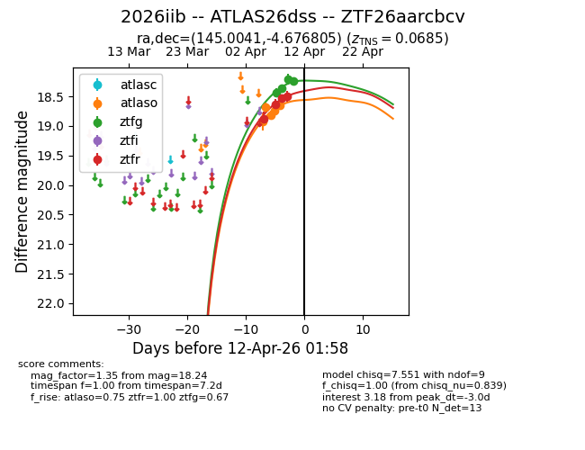
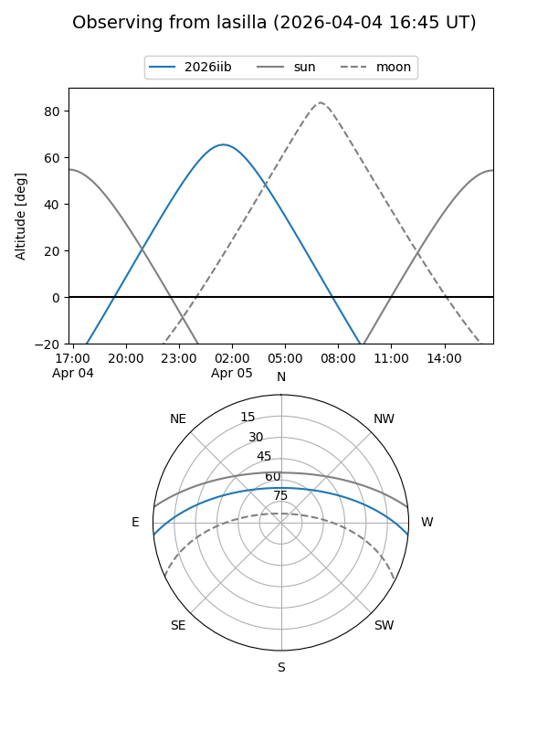
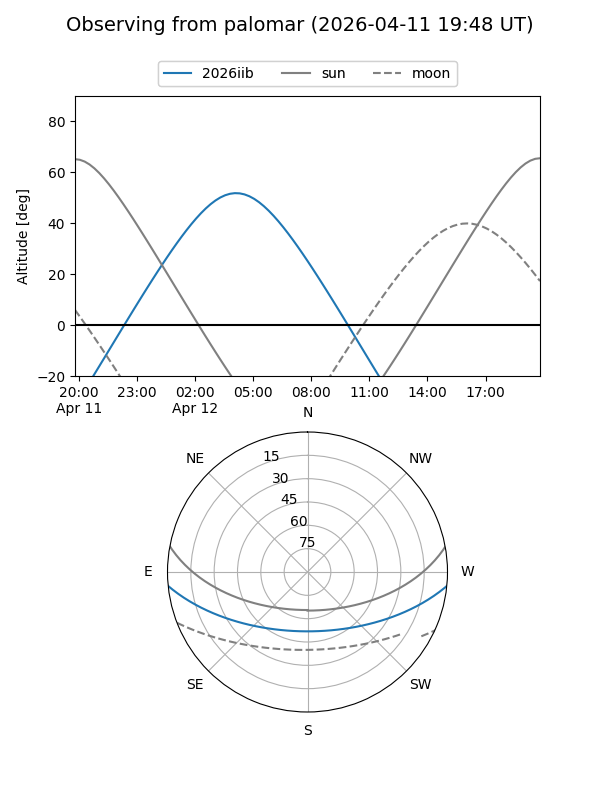
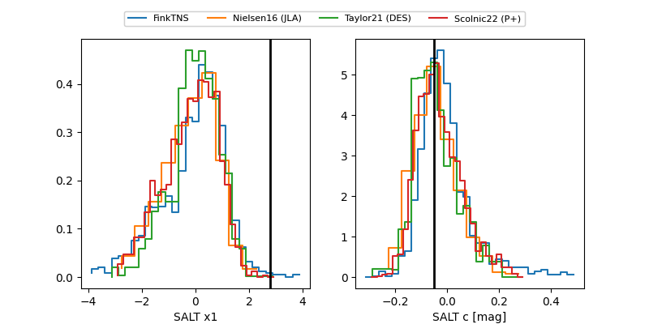

2026iib
Target 2026iib at 2026-04-12 02:09
Aliases and brokers:
FINK: link
Lasair: link
ALeRCE: link
TNS: link
YSE: link
alt names
ZTF26aarcbcv (ztf,fink_ztf)
2026iib (tns,yse)
ATLAS26dss (atlas)
Coordinates:
equatorial (ra, dec) = 145.0041,-4.67680
equatorial (HMS+DMS) = 09:40:00.98,-04:40:36.50
galactic (l, b) = (239.9923,+33.91889)
Flags:
confirmed ia
Photometry:
last atlaso=18.66, ztfg=18.24, ztfr=18.50
5 atlaso, 4 ztfg, 4 ztfr detections
Lightcurve

Visibility


Additional plots
